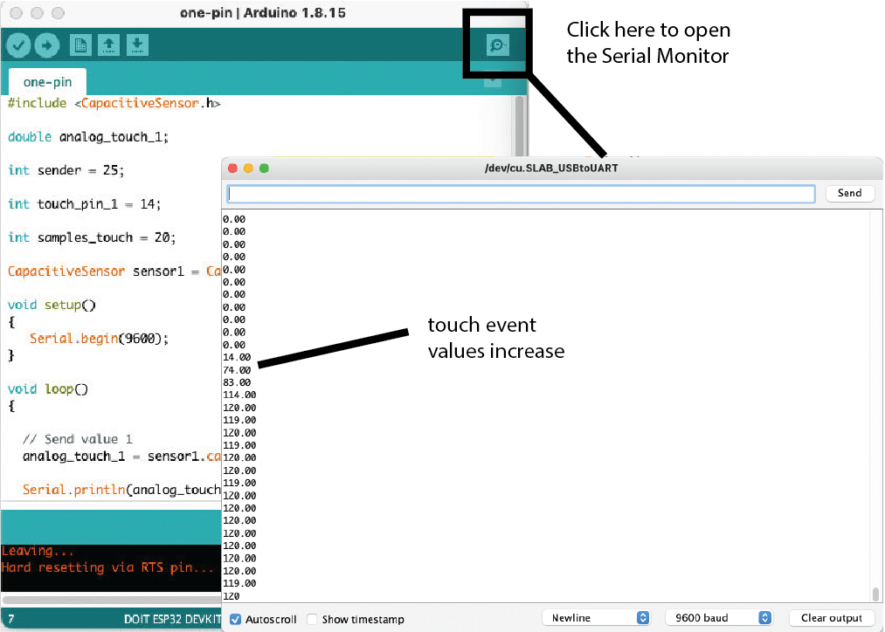

6.810 Engineering Interactive Technologies (fall 2021)
Lab 2: Sensing Touch from Inkjet Printed Circuit
In this lab, you will wire up your silver inkjet printed music card to a microcontroller and then write code to sense when the user touches one of the buttons.
Steps:
- Install Arduino and ESP Microcontroller Drivers
- Mount Microcontroller Onto Breadboard
- Build Capacitive Touch Sensing Circuit
- Install Arduino Capacitive Sensing Library
- Run Sample Code to Test if Touch Sensing Circuit Works
- Extend Circuit and Code to 3x Touch Sensors
- Threshold Touch Signals: Touched or not Touched?
- Format Serial Output
Deliverables
At the end of the lab, upload to your student google drive:
- the Arduino code you wrote for touch sensing and Serial Communication (.ino file format)
- a photo of your wired up music card connected to the breadboard and ESP microcontroller
- a short video showing your Serial Plotter output of touching each touch button (.mov or .mp4, no more than 20MB)
Help us Improve Class Materials for Lab2:
Please let us know if you had any trouble with the circuit or programming or if anything was confusing in the write up.
You can add your comments here.
(1) Install Arduino IDE and ESP Microcontroller Drivers
First, please follow the instructions here to install the Arduino IDE, the ESP Core Board Manager, and the USB cable driver. If you already have any of those installed but you installed them more than 3 months ago, we still recommend you reinstall everything to make sure you have the latest version. Once you have the Blink program working, you are ready to go!
(2) Mount Microcontroller Onto Breadboard
Use only two breadboards for the labs: In total, you have four breadboards. However, only two breadboards should be used for the labs and the other two should be reserved for the problem set circuit.
The ESP32 microcontroller is too large to be mounted on a single breadboard while still having access to all pins. Thus, you will put two breadboards next to each other and mount the ESP32 right in the middle between the two (similar to how you did it in 6.08).
Place the two breadboards side by side: Let's get started by placing the breadboards side by side.
Break Off One(!) Power Lane on One(!) Breadboard (*not* both!): To be able to connect two breadboards together, we need to break off the power lane on one(!) breadboard on one(!) side (see image below).

Connect Both Breadboards: Next, connect the two breadboard using the small pins on their sides.
Mount ESP onto Breadboards: Finally, put your ESP32 right onto the middle between the two breadboards
(3) Build Sensing Circuit on the Breadboard
Capacitive Touch Sensing: We will implement touch sensing based on the principle of capacitive touch sensing. The circuit for capacitive touch sensing requires a sender pin, which outputs a signal, and a receiver pin, which listens to the signal. The sender and receiver pin have the touch button connected between them. When a user touches the touch button, the signal that was injected by the sender pin will take longer to discharge due to a capacitive object (finger) nearby. The microcontroller can measure this time difference and, thus, detect touch.
Using Larger Resistors to Increase Sensitivity: To delay the discharge from the user's finger and make the time difference measurable on the ESP32, you will add a resistor between the sender and the receiver pin. A higher resistance enables more sensitive sensing (a 10MOhm resistor enables sensing of a finger up to 10cm distance, while a 10kOhm resistor would not make such a large distance detectable). However, higher resistance comes at the cost of speed because the signal takes longer to discharge. Since we only want to sense touch and do not need to sense hovering of a finger, we will use a 100kOhm resistor because it offers a good trade-off between sensitivity and sensing speed.

Let's build the circuit and write the code for one touch button, and then later repeat the procedure for the other touch buttons. To get started, look at the schematic and follow these steps:
Sender Pin: For the sender pin, you can use any GPIO pin on the ESP. For this first touch button, we ask you to use GPIO pin 25.
Receiver Pin: For the receiver pin, it is best to use a pin that is labeled TOUCH (see ESP pin out below). These pins are optimized to serve as receivers for capacitive sensing and therefore return cleaner signals, so we will use them for our sensing application. Do *not* use TOUCH0, it does not work on this particular model of ESP32 [1]. For this first touch button, we ask you to use GPIO pin 14.
Resistor: We will use a 100k Ohm resistor. Add the resistor to the circuit between your sender and receiver pin for your first touch button.

Connecting to the Inkjet Printed Touch Button: Finally, connect your printed touch button to the circuit on the breadboard. For this, you will use a crocodile clamp and a jumper wire. One side of the crocodile clamp goes onto the connector pad of the touch button, the other side clips into the end of a jumper wire. The jumper wire can then be used to connect to the breadboard. Once you have your first touch button wired up, you are ready to write the code for sensing touch with it.
(4) Install Arduino Capacitive Sensing Library
Next, we will write a program that receives the touch sensor signal from your first touch button and plots it on your computer. To process the touch sensor signal, we will use the Arduino CapacitiveSensor library.
Install Library via Arduino Library Manager: To install the library, open Arduino and go to Sketch -> Include Library -> Manage Libraries and search for the CapacitiveSensor library and install it. Close the Arduino IDE and reopen it after install.

Run Sample Code: Download this starter code here and see if you can compile and upload it to your microcontroller. If the compiling completes without error messages, then you are all set to move on to the next section on sensing the touch signal. However, if the installed library does not work and returns an error message like 'XXX' does not name a type" upon compiling, please try the alternative install below.
Alternative Install from github: First, remove the previously installed library. You can delete it on Mac under 'Macintosh HD/Users/your-username/Documents/Arduino/libraries' and on windows this is under 'My Documents\Arduino\libraries\'. Once the library is deleted, go to the library's GitHub repository and download it as a .zip file. Re-install the library via the .zip file. The instructions to do so can be found here. Sketch -> Include Library -> Add .ZIP Library. Don't forget to close the Arduino IDE and reopen it after install. Then try to compile the starter code one more time and see if it successfully uploads to your microcontroller.
(5) Run Sample Code to Test if Touch Sensing Circuit Works
By now, you should have already downloaded the starter code, opened it in your Arduino IDE and compiled and uploaded it to your microcontroller. The sample code can read the signal from one touch button and write it to Arduino's serial monitor.
/*******************************************************************************
* Capacitive Sensing for Touch and Proximity
*
* Prints the values of a capacitive sensor.
*
*******************************************************************************/
#include <CapacitiveSensor.h>
double analog_touch;
int sender = 25;
int touch_pin_1 = 14;
int samples_touch = 10;
CapacitiveSensor sensor1 = CapacitiveSensor(sender, touch_pin_1);
void setup()
{
Serial.begin(9600);
}
void loop()
{
// Send value 1
analog_touch = sensor1.capacitiveSensor(samples_touch);
Serial.println(analog_touch);
delay(10);
}
Use Serial Monitor to Observe Signal Changes During Touch: If you wired up your touch button according to our pin assignment, the code will write the touch signal to the serial monitor of the Arduino IDE. You can open the serial monitor by clicking on the squared icon in the upper right corder of your Arduino IDE window (see image below). Once you open the serial monitor, you should see a bunch of numbers fly by. If you touch your touch sensor, the values should change significantly. If your numbers don't change, there may be something wrong with your circuit. Double check your circuit and then ask a TA for help.

(6) Extend Circuit and Code to 3x Touch Sensors
In this lab, we will only build the circuit and write the code for the touch buttons. We will take care of the slider in a later lab.
Extend Circuit: Since we have three notes that serve as touch buttons, we need to extend our circuit to read those touch signals as well. Use a breadboard to make 3 touch button circuits, each connecting to one of the notes. You can use the same sender pin for all three touch buttons. Only the receiver pin has to vary, i.e. you need one receiver pin for each touch signal you want to read. Also each touch sensor needs its own 100k Ohm resistor. The pin numbers are up to you.
Extend Code: Next, extend your code to read and print all 3 of your touch sensors. When you print your touch values, please use Serial.print() not Serial.println(). Each sensed value should be separated by a tabulator symbol Serial.print(","); and the line should finish with a new line Serial.print("\n").
Test If Circuit and Sensing Works: Instead of reading raw numbers in the Serial Monitor, you can also plot the received values in a nice graph. To do this, open the Serial plotter to visualize the received signals by clicking on 'Tools->Serial Plotter'. Because of the formatting we used (comma seperated using Serial.print()), we can see all three variables plotted at the same time. Similar to before, touch the sensors and see how the signal changes. If you see no changes, either your circuit or your code have a bug. Below you see how we touch the button 1 first, then button 2 and finally button 3. You can increase the number of times the signal is sampled by increasing the value of 'samples_touch' in your code.
(7) Threshold Touch Signals: Touched or not Touched?
Next, we want to convert the raw signal into touch events, i.e. 'button touched' or 'button not touched'. As you saw in the serial plotter, the values for each sensor can vary pretty wildly as mentioned in lecture. We will do more filtering of signals later in class, but for now we will make a rough estimate in which range our sensor signal falls for each touch button and then use a simple if/then statement. Look at the serial plotter to determine the range for each touch button. Write code that iterates over all sensors and outputs every 200ms if each touch button was touched or not.
(8) Format Serial Output
In the next lab, we will read the output from the Serial Monitor into a program called Processing. For this, we want to make sure our output is formatted well.
Formatting Output for each Sensor: For each sensor, we want to reformat our output so that:
(sensor ID),(is_touched);
(sensor ID): is either 0, 1 or 2 and represents the ID of the observed touch sensor.
(is_touched): is either 0 or 1 (0 if the sensor is not touched, and 1 if it is touched).
(,): the comma is the separator between the two numbers.
(;): the semicolon is the end symbol of the message.
A sample output for touching only sensor 0 should look like:
0,1;
1,0;
2,0;
Print Serial Messages only when Button State Changes: So far we have been printing all touch button values to the Serial monitor no matter if the state of the touch button changed or not. As the last step in this lab, we want to print new information only if the sensor state changes, i.e. a touch button was not touched before but is now being touched, or the touch button was touched but the user just released the finger. Change the code such that it tracks in which state each sensors is currently in. Check for a state change and send the Serial message only once.
Example:
If sensor 0 gets touched, this message is printed once:
0,1;
Then when the user lifts the finger again, this message is printed once:
0,0;
In between these two events, no message should be sent.
Deliverables
At the end of the lab, upload to your student google drive:
- the Arduino code you wrote for touch sensing and Serial Communication (.ino file format)
- a photo of your wired up music card connected to the breadboard and ESP microcontroller
- a short video showing your Serial Plotter output of touching each touch button (.mov or .mp4, no more than 20MB)
Footnotes
Please let us know if you had any trouble with the circuit or programming or if anything was confusing in the write up.
You can add your comments here.
/*******************************************************************************
* Capacitive Sensing for Touch and Proximity
*
* Prints the values of a capacitive sensor.
*
*******************************************************************************/
#include <CapacitiveSensor.h>
double analog_touch;
int sender = 25;
int touch_pin_1 = 14;
int samples_touch = 10;
CapacitiveSensor sensor1 = CapacitiveSensor(sender, touch_pin_1);
void setup()
{
Serial.begin(9600);
}
void loop()
{
// Send value 1
analog_touch = sensor1.capacitiveSensor(samples_touch);
Serial.println(analog_touch);
delay(10);
}0,1;
1,0;
2,0;
0,1;0,0;[1] Pin GPIO 0 (TOUCH1) cannot be used as receiver because it is the strapping pin for this version (DevKitC) of ESP32 and cannot be used due to external auto program circuits. However, you could still use the pin as a sender.